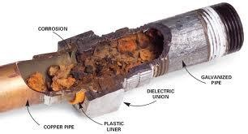
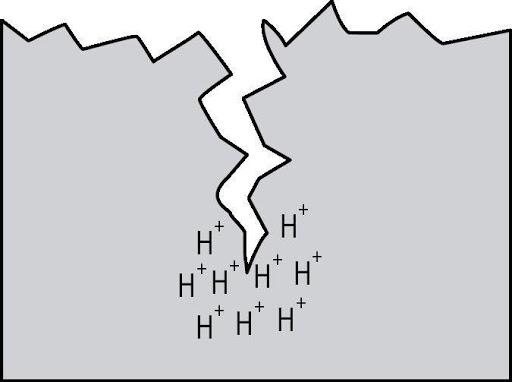
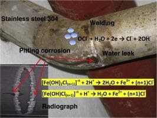
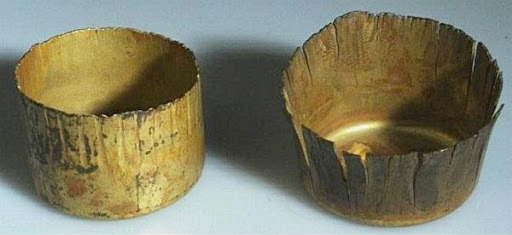

Level 01
?Select the possible sources of Chlorides in Surface or ground water.
Industrial effluents
Inorganic fertilizers
Organic farming
Seawater intrusion in coastal areas
Septic tank effluents
Level 02
Chlorides are leached from various rocks into soil and water by weathering. The chloride ion is highly mobile and is transported to closed basins or oceans.
?Select the various analytical methods that can be used to determine concentration of chloride ions in water.
Level 03
In the Mohr’s titration method, various colors of the reaction mixture are significant of the reactions taking place.
? Match the following colors of reaction mixture with the appropriate reason responsible for the color.

Level 04
The chloride ions have effect on corrosion. In metal pipes carrying water, chloride increases the electrical conductivity and thus __________ its corrosivity.
Increases
Decreases
Has no effect on corrosion
Level 05
As the chloride ions increase the electrical conductivity of water and thus increases its corrosivity.
?Which types of corrosion out of the following, are affected by the presence of chloride ions?



